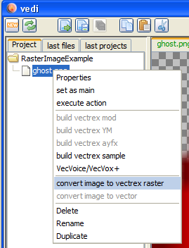
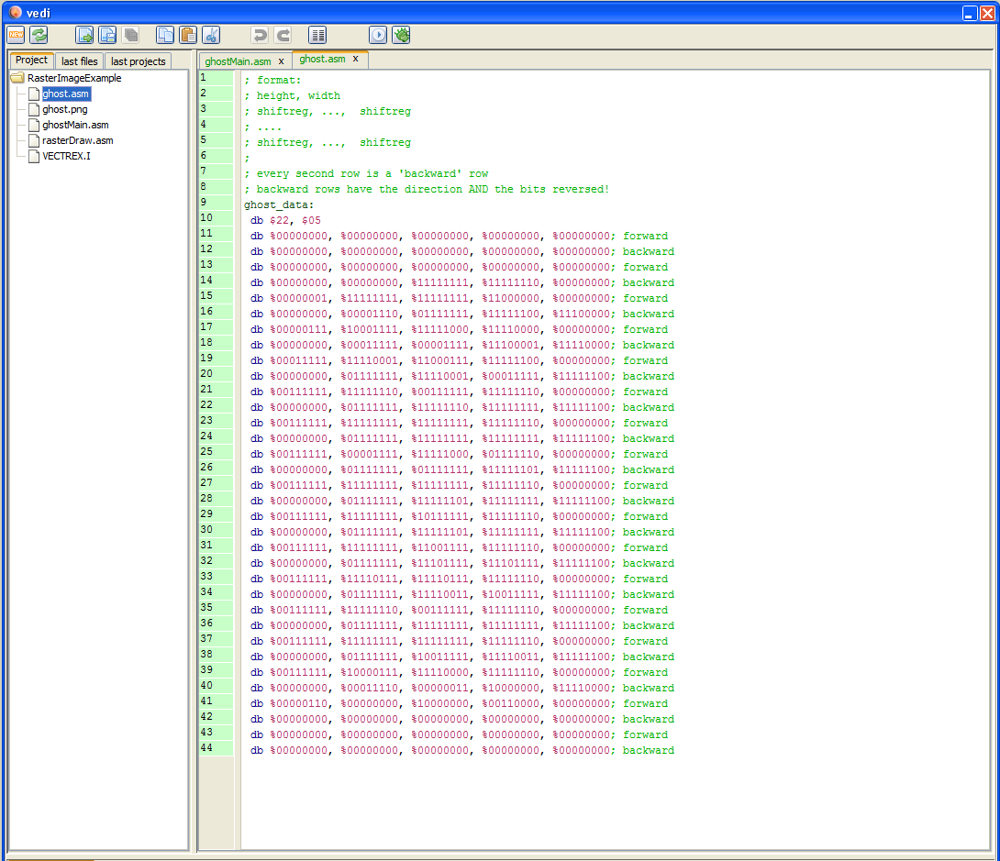

add a file to the project
Raster image conversion and display code is generated in vedi, using the popup on the project file tree. By chosing the entry "convert image to vectrex raster" the dialog for image conversion is displayed. (see also the vedi→Raster images documentation)
The popup menu is only activated while an image file is selected in the current project. You have to download or create image files befor you can convert them. If you have a file available, you can easily add the file to your project. Place the mousecursor over the project name and press the right mouse button.
add a file to the project
Chose "add file"... and navigate in the resulting file choser to the image file of your desire.

add an image file
By chosing a file - the file is copied to the project directory and is NOW available.

convert image to vectrex raster
Selecting "convert image to vectrex raster" opens the - dialog: (which is explained in "Raster images")

convert image dialog
Exiting the above dialog with "create" will (...hm...) create sources in the current project directory.
(The name of the generated sources are derived from the chosen file. In the following it is assumed that the name given is "ghost.png".)
The generated sources are accompanied by an example raster display program. The example routine is programmed for bi directional raster data, if you want to use the provided routines - be sure that the corresponding checkbox is checked.
Note:
You can chose whether you want to generate uni- or bi- directional data (and examples).
bi directional data will be drawn:
positioning of the beam
draw one line forward
draw one line backward
do 2) and 3) till finished This is in comparisson quite fast, but the result is prone to be "italic" due to vectrex drift
uni directional data will be drawn:
zeroing and positioning of the beam
draw line forward
do 1) and 2) till finished This is in comparisson quite slow (nearly double time as bi), but the result very "clear" and is immune to drift
Following sources are generated:
rasterDraw.asm
the subroutines to display a raster "image"
VECTREX.I
which is needed by the source
ghost.asm
a file with the actual image data
ghostMain.asm
a "main" file, with an example vectrex runnable "cartridge" file
A vectrex playable binary file can be generated by setting the generate ghostMain.asm file as the main file in the project.

set example main
The format and the actual display routines are documented in the source code. Just a few bullet points...
the actual display routine is called draw_raster_image and expects a pointer to the image data in register U
as with BIOS raster routines (printStr), the size of the image can be set with BIOS RAM locations:
Vec_Text_Height and Vec_Text_Width
in the example these are filled with defined constants (see top of main file): WIDTH and HEIGHT
the raster display example routines kept in the file rasterDraw.asm were put together in a few "minutes", and can probably be optimized. Just keep in mind, that the actual update of the ShiftReg should be done in 18 cycles (less - skips data and VIA can stall on certain cycle counts, more - are "a waste of time"...)

example main
The actual generated raster data is kept in the file ghost.asm :

ghost.asm

example raster display